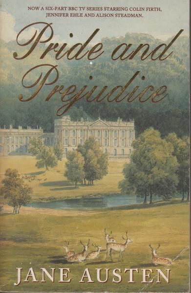

Merhaba! Ben Gülsüm Utlu. Şu sıralar Java’nın güçlü dünyasında gezinirken, bir yandan da back-end geliştirme alanında sağlam adımlar atıyorum. Hedefim net: Full Stack Developer olarak yazılım projelerine uçtan uca katkı sağlamak. Frontend ve backend’in birleştiği yerde, hem teknik bilgiye hem de kullanıcıyı anlayan bir bakış açısına ihtiyaç olduğuna inanıyorum. İşte ben tam da bu dengeyi kurmak için buradayım. Kod yazarken sadece çalışmasını değil, sürdürülebilir ve okunabilir olmasını da önemsiyorum. Takım içinde paylaşımcı, öğrenmeye açık ve çözüm odaklı bir yapım var.
Sayfama Hoş Geldiniz
Hakkımda
Hobiler
Kod yazmadığım zamanlarda kendimi ruhen ve zihnen besleyen alanlara yöneliyorum. Doğayla iç içe olmayı sevdiğim için trekking vazgeçilmezlerimden biri. Uzun yürüyüşlerde hem bedenimi dinlendiriyor hem de zihnimi toparlıyorum. Boş zamanlarımda kitap okumak en keyif aldığım aktivitelerden biri. Favori romanım Gurur ve Önyargı, dönem kurgusuyla ve karakter derinliğiyle beni her okumada yeniden etkiliyor. Müzik ise hayatımın arka planında hep var. Farklı türlerde müzikler dinleyerek hem odaklanıyor hem de ilham alıyorum. Ayrıca düzenli olarak pilates yapıyorum; bu hem bedenimi güçlü tutuyor hem de disiplinli bir yaşam tarzını destekliyor. Yeni fikirler üretmeyi ve kendi projelerimi geliştirmeyi de çok seviyorum. Her yeni proje, kendimi ifade edebileceğim yeni bir alan gibi geliyor.


Projelerim
WebProje (HTML, CSS, JS)
Bu projede, Çorum şehrini tanıtan kapsamlı bir web sitesi geliştirdim. Sitede Çorum'un tarihçesi, gezilecek yerleri ve yöresel yemekleri detaylı şekilde tanıtılmakta. Ayrıca ziyaretçilerin kolayca iletişime geçebilmesi için bir iletişim formu da ekledim. Projenin amacı, Çorum'u dijital ortamda etkili ve modern bir şekilde tanıtmaktır.
Menü Görseli (HTML & CSS)
Sadece HTML ve CSS kullanarak modern ve kullanıcı dostu bir menü tasarımı oluşturdum. Bu menü, farklı cihazlarda sorunsuz çalışacak şekilde responsive olarak tasarlanmıştır ve sade arayüzüyle öne çıkmaktadır.
Form Sitesi (HTML & CSS)
HTML ve CSS ile hazırladığım bu projede, kullanıcıların kolayca bilgi girebileceği ve etkileşimde bulunabileceği şık bir form arayüzü tasarladım. Formun amacı, kullanıcı deneyimini ön planda tutarak sade ve anlaşılır bir iletişim ortamı sunmaktır.
FPS Oyun (Unity & C#)
Farklı alanlara olan ilgim sayesinde Unity ve C# kullanarak bir FPS (First Person Shooter) tarzında oyun geliştirdim. Bu projede temel oyun mekaniği, karakter kontrolü ve düşmanların ana karakteri otomatik takip edebilmesi için yapay zeka entegre ettim. Oyun geliştirme süreci, yazılım ve tasarım becerilerimi farklı bir boyuta taşımamı sağladı.
(Tüm projelerime GitHub sayfamdan ulaşabilirsiniz.)